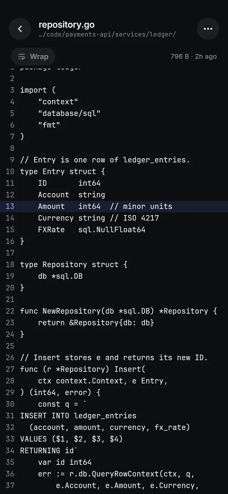

Read the command, then allow.
Chat, or watch it live.
See what it made.

An agent wants to run a command. Press and hold Yes.
Bash command: make migrate ENV=stagingDemo data.

Chat sessions run a small helper on your computer.
| Agent | Status |
|---|---|
| omp | Tested on a phone |
| Claude Code | Tested on a computer, not a phone yet |
| Codex | Chat works, approving untested |
| pi | Not tested yet |
| Any terminal agent | Shows in the list |
Android 7 or newer.
herdr.dev. Linux or macOS.
In the app: Machines, then +.
0.1.61 · Delete a worktree to give its disk space back · Changelog · Atom feed
Claude Code, Codex, omp, pi, or any agent running in herdr. See the table.
No. Android only.
No. Your computer needs Linux or macOS.
No. Nothing runs 90 seconds after you leave, unless you turn on notifications.
Yes. Open source under GPL-3.0.